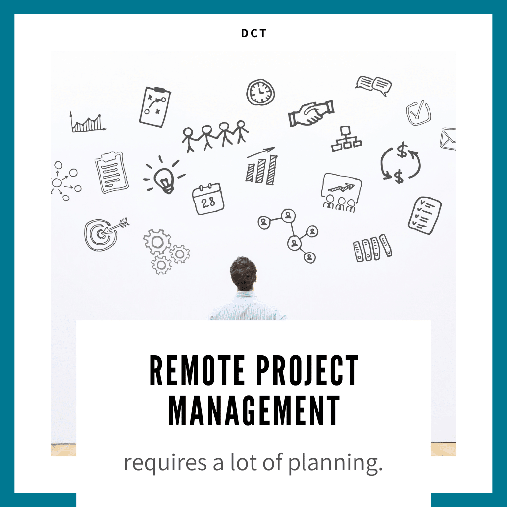
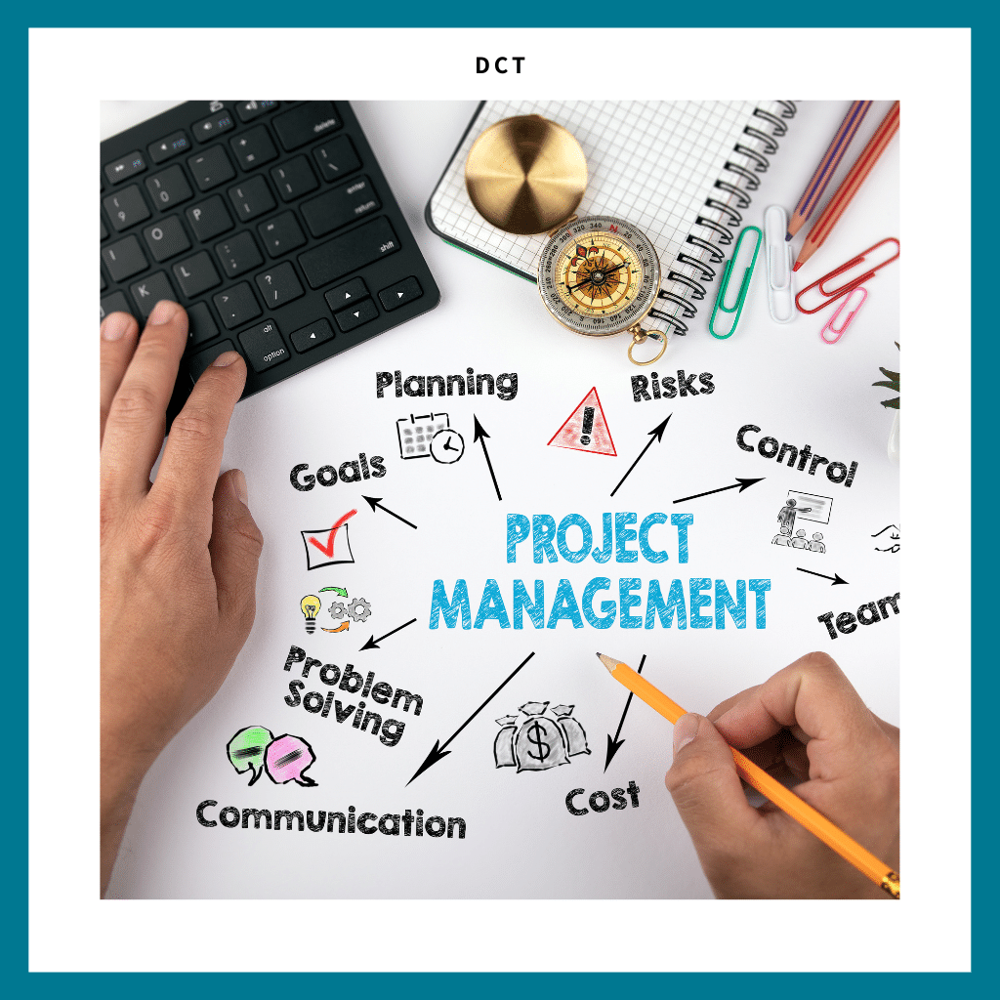

-
Benefits Of Remote Project Management
If you are considering or already managing a remote project and team, you might already be
familiar with the positive
and the negative sides of it
. Compared to traditional project management, remote project management is beneficial in various
ways. It can lower your
operation costs by reducing the need for office space and rents, and improve the work/life
balance of your team members.
One of the most important benefits of remote project management is, however, the
possibilities it offers to attract top
talents around the world
. You can hire people from everywhere, no matter the geographical location. Here the importance
of remote project
management tools play a vital role.
When your team members are not in the same location, you don’t have that many regular meetings
or lunch breaks. Without
a proper office environment, it can be hard for people to follow what is going on right now and
with what the team
members might need help with.
By using the best remote project management tools, you can avoid many obstacles
. These tools let you take better control of the communication and operations of your team. A
proper remote project
management tool helps you to keep everyone working almost as they would actually be in the same
location and office.
-

How To Make Remote Project Management Successful
There are some core ingredients that you need to have in order for delivering successful
projects with your remote
teams. Some of these factors are for instance:
-
Choosing the right kind of remote project management tool.
-
Making sure that the processes are clear for every team member’s role.
-
Setting up clear and agreed upon deadlines already in advance.
-
Using the right kind of remote project management approach to ensure that the project is
done on budget and on time.
Plan The Project In Detail
Before you choose the best remote project management tool for your team and organization,
you need to plan the project
in detail.
The better you know what needs to be done and how, the more suitable project management tool for
remote work you end up
choosing. At least in an ideal case.
Typically, simple projects can be managed with a little effort, but on the other hand more
complex projects usually have
a lot of moving particles. In this sense it is clever to plan the project and give every team
member a clear rundown of
the specs before you start the actual work.
-
Tips On How To Choose The Best Remote Project Management Tools
-
Plan the remote project to be as clear as possible from day one.
-
Think of all the tools that would make the workflow easier: do you need tools for video
calls, idea sharing, document
sharing etc?
-
Define what the assumptions of your team are. If the team is a smaller one, you can even ask
for their preferences to
the remote project management tool to be selected.
-
Make the communication with your team, project stakeholders and other possible participants
easy.
-
Document your project’s budget and scope as carefully as you can.
When you are making the team members part of the project from as early a stage as possible,
you are making everyone feel
more involved
. This will also help you and your team members to be on the same page from the start. Also, it
makes it possible for
you to set your expectations for each member in a very early stage.
Ask yourself these questions, before choosing the tools for remote project management:
-
What are the goals that you are working towards?
-
What problems are you solving with this project?
-
What’s the scope of your remote project?
-
What does the project timeline look like?
-
Who will be responsible for what and when?
-
Remote Project Management Tool Helps to Avoid and Spot Bottlenecks
Using a remote project management tool it’s possible for you to assign tasks to team members
accordingly
. Depending on the settings and the software, each team member can also create and edit
different tasks. This helps
everyone in the team to get a clear picture of where you are at and what needs to be done next.
These remote project
management tools make it easier to spot bottlenecks and make needed changes.
Tools for remote project management can include various features and to many of them, new
features are added on a
regular basis. These features can be for instance about
-
AI-based learning
-
Sticky notes
-
File sharing
-
Video calls for tens or hundreds of people
-
New channels for projects
-

Free Remote Project Management Tools
Majority, if not all of the remote project management tools that our team recommends, have
both paid and free options
. Typically free remote project management tools are, however, for a test-drive. This means that
you can get up to 30
days of free usage and after that, if you wish to continue using the tool, you need to pick a
suitable, paid plan.
Using Cloud-based Collaboration Tools For Remote Project Management
It’s also good to remember that not all remote project management tools need to be expensive
or complete sets with
various kinds of features
. Instead, sometimes even a Google Docs/Skype combination is enough.
What’s particularly great about these simple tools is that they are living documents. Everyone
with an invitation or a
link can make changes according to the settings that you provide them with. If and when
something needs to be fixed,
everyone can also see the changes and fixes in real time. Google Docs for instance allows you to
add tags and comments:
this way the team members get notified.
-
After Choosing The Project Management Tool For Remote Work
Once you have chosen the best project management tool for remote work and have the plan
ready, it’s time to bring your
team together.
Many of the tools we recommend provide you with virtual meeting rooms. If the tool has these
features, great. If not,
you can use tools such as Google Hangouts, Teams or
If the remote project management tools that you have chosen are not something that your team
members are already used
to, organize a
. Here you can all meet up and discuss the project, plus get to know the digital collaboration
tools more closely. All
the tools related to your project would be good to be easy to use for everyone from the very
first day you start
working.
Keeping Everyone on Track of Every Deadline And Task
Remote project management tools are now in their place and your team is ready to start using
them. Great! After you have
kicked off the project, you need to manage the daily tasks to make sure that the project runs as
smoothly as possible.
Project management tools for remote work are typically versatile
. They enable you to keep track of things like deadlines, deliverables, budgets and even every
hour there is to bill.
Tools keep everyone on the same page easily. Managers are not going over their budgets that
often and on the other hand
no one can say they didn’t know when a certain task was due.
In our experience combining multiple remote project management tools is very common and many
times recommended
. However, some organizations, teams and projects might even get messy if there’s too many
different tools being used at
the same time. If you decide to go ahead with multiple tools, make sure that there’s one that is
the most important one.
-
Other Great Remote Project Management Tools
Here’s some of the tools for remote project management that we can recommend
-
Asana
-
Trello
-
Kissflow Project
-
GoodDay
-
Scoro
-
Zoho Projects
-
MeisterTask
-
Kintone
-
Keyedin
-
Celoxis
-
Workzone
-
Smartsheet
-
Basecamp
-
Proworkflow
-
EasyProjects
-
Finally
When you have a remote team and projects to manage, it requires laying a new foundation and
guidelines for each project.
You as a remote project manager need to gather detailed specs for the project, send out
invitations to kickoff meetings
and track how the project is progressing
. Even though your team might be in different locations around the world, you still need to get
everyone to come
together.
The path to a successful remote project is easier, when you choose the right kinds of remote
project management tools.
With the right tools you are able to deliver projects on time, no matter where your team members
are working from.